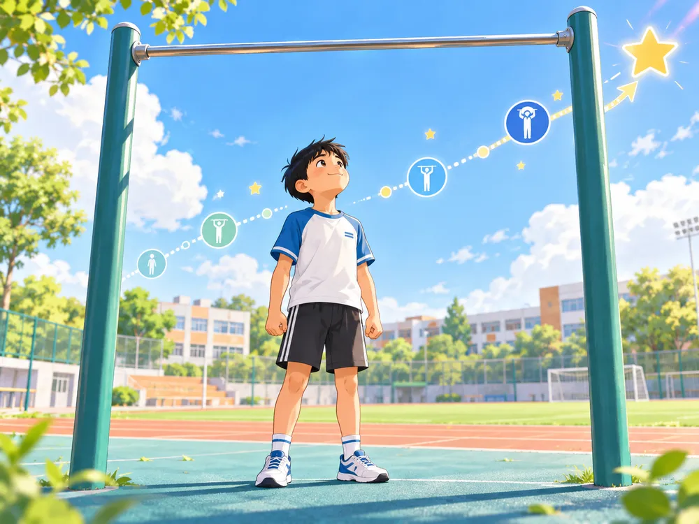

解锁引体向上——力训私教课
每天完成一点，系统会根据你的表现自动调整下一次训练。
当前等级
青铜
先把“挂住”和“肩膀会发力”练稳。
预计解锁
先测基线
完成第一次基线后，这里会显示当前引体准备度。
第一次：看看现在从哪里出发
基线只在第一次出现。保存后，以后打开会直接进入当天训练。

每天完成一点，系统会根据你的表现自动调整下一次训练。
基线只在第一次出现。保存后，以后打开会直接进入当天训练。